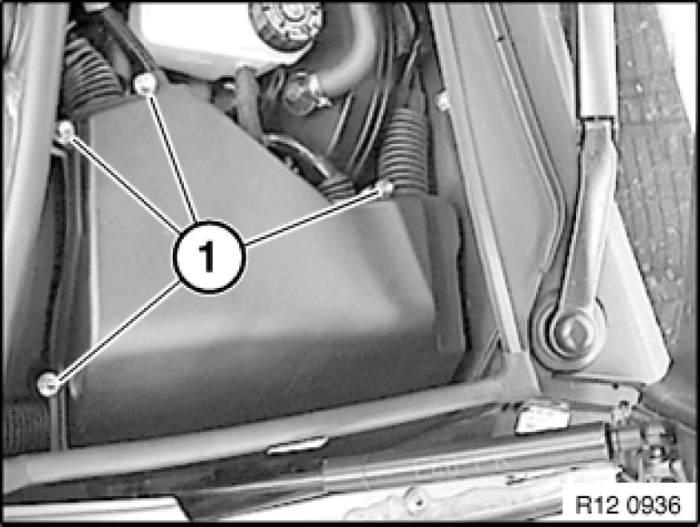
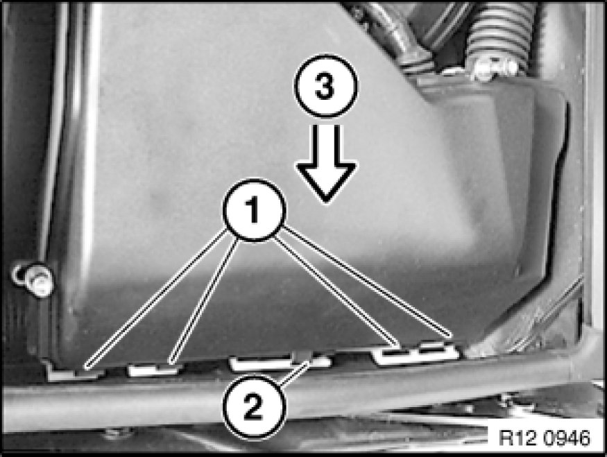
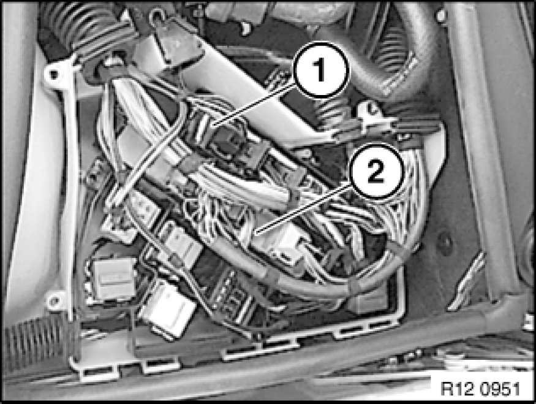
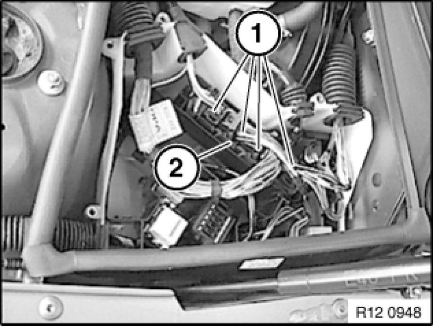

12 14 550 Replacing Control Unit (DME)
12 14 550 - Replacing control module (DME)
Follow instructions for removing and installing electronic control units Service and Repair.

Before replacing the control module, always follow the instructions listed below:
- Code control unit. Coding Control Module (DME/DDE)
- Program control unit. Programming Control Unit (DME/DDE)

Caution!
It is absolutely essential to read out the fault memory with the MoDiC or the BMW DIS and to create a fault memory printout.
Turn off ignition.

Release screws (1).
Remove cover.

Installation Note:
Correctly install wiring harness with grommet in cover (water tightness).
Hook cover (3) into hinges of underside of electronics box (1). Make sure upper stop (2) is correctly installed above hinges on underside of electronics box.

Assignment of electronics box (with automatic transmission):
1 = Control unit, Digital Motor Electronics (DME)
2 = Control unit for automatic transmission

Disconnect plug connections (1).
Remove control unit (2).
Installation Note:
Replacement:
Observe equipment no. and coding.
Note:
Interrogate fault memory of DME control module.
Check stored fault messages.
Rectify faults.
Then clear fault memory.